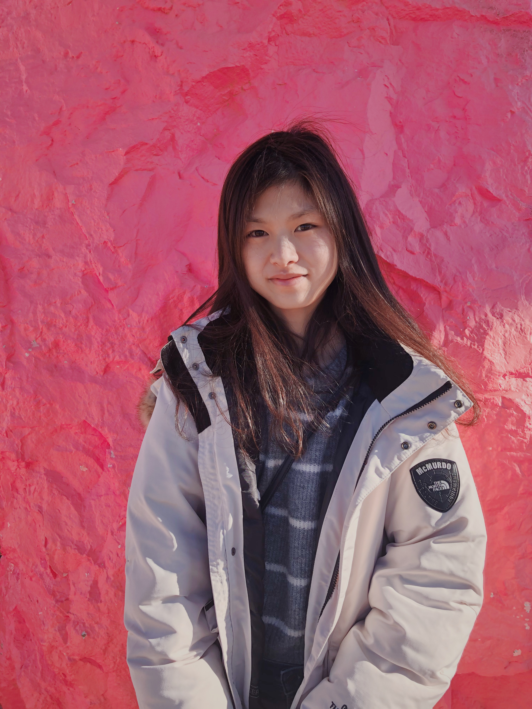

I'm a second year Computer Science major at UC Berkeley.
I'm passionate about innovation and building valuable software. I have a range of experiences with programming languages such as Java, Python, C, HTML/CSS, and Javascript. I'm currently an EECS department Undergraduate Student Instructor(uGSI) at UC Berkeley for CS61B (Data Structures and Algorithms) with over 1200 students. I'm looking forward to growing my experiences in the technology industry and further develop my computer science skills.
